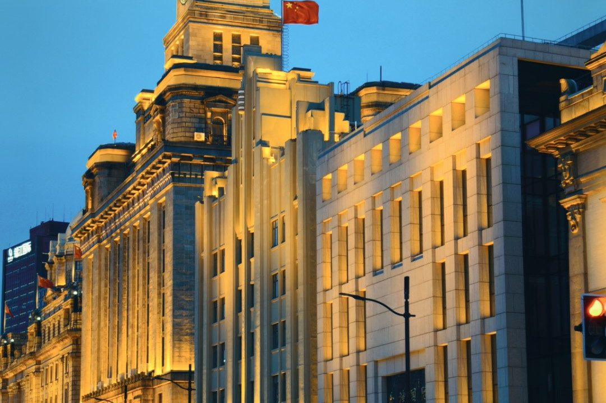

PHOTOS · 摄影
外滩 · 蓝调时刻

傍晚六点半，外滩的人还没散。我靠在防汛墙上，等那个摄影人叫它「蓝调时刻」的二十分钟——太阳落下去，天光还剩一点青，路灯和建筑的轮廓灯抢先亮起来。
海关大楼是这时候最好看的。白天它是灰扑扑的老石头，可灯一亮，那些罗马柱、那座钟楼，忽然都有了温度，像一位换好晚礼服的老人。钟面还是亮的，指针不紧不慢，底下车流已经开始堵。
我架着相机拍了十几张，最满意这张：天是丝绒的蓝，楼是暖的黄，红绿灯在车流里明明灭灭。一个世纪前这里也是灯火通明，只是灯不一样。石头记得的事，比人多。
完